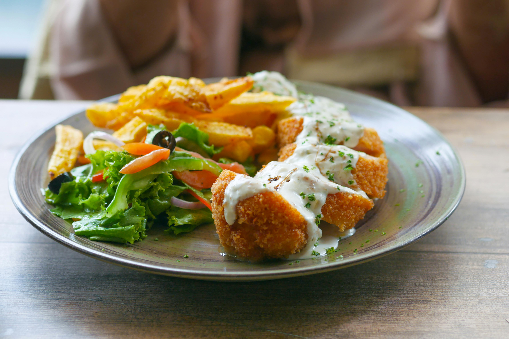

Classic Chicken Cordon Bleu

Description
Theres nothing we love more than a crispy, succulent, perfectly fried piece of fried chicken. But we also love gourmet meals. You know, the ones that you sit down to in the candlelight? Those ones. Well, our easy chicken Cordon Bleu is the best of both worlds. It sounds fancy, but it's just some really, really good fried chicken. That, we can promise.
Ingredients
- 3 tablespoons all-purpose flour
- 6 skinless, boneless chicken breast halves
- 6 slices Swiss cheese
- 6 slices ham
- 1 teaspoon paprika
- 6 tablespoons butter
- ½ cup dry white wine
- 1 teaspoon chicken bouillon granules
- 1 cup heavy whipping cream
- 1 tablespoon cornstarch
How can i cook it ?
- Step 1
- Mix flour and paprika together in a shallow bowl.
- Step 2
- Pound chicken breasts to a thickness of 1/4 inch. Place one slice Swiss and one slice ham onto each breast, leaving the outer 1/2 inch uncovered. Roll chicken over filling, dip in flour mixture to coat on all sides, and secure with toothpicks.
- Step 3
- Melt butter in a large skillet over medium-high heat. Add chicken and cook, turning occasionally, until browned on all sides, 5 to 8 minutes. Add wine and bouillon. Reduce the heat to low, cover, and simmer until chicken is no longer pink in the center and the juices run clear, about 30 minutes. An instant-read thermometer inserted into the center should read at least 165 degrees F (74 degrees C).
- Step 4
- Transfer chicken to a warm platter and remove the toothpicks. Whisk cream and cornstarch together in a small bowl; slowly pour into the skillet, whisking constantly to blend with remaining wine mixture. Cook, stirring often, until sauce thickens, 3 to 5 minutes.
- Step 5
- Pour sauce over chicken and serve immediately.